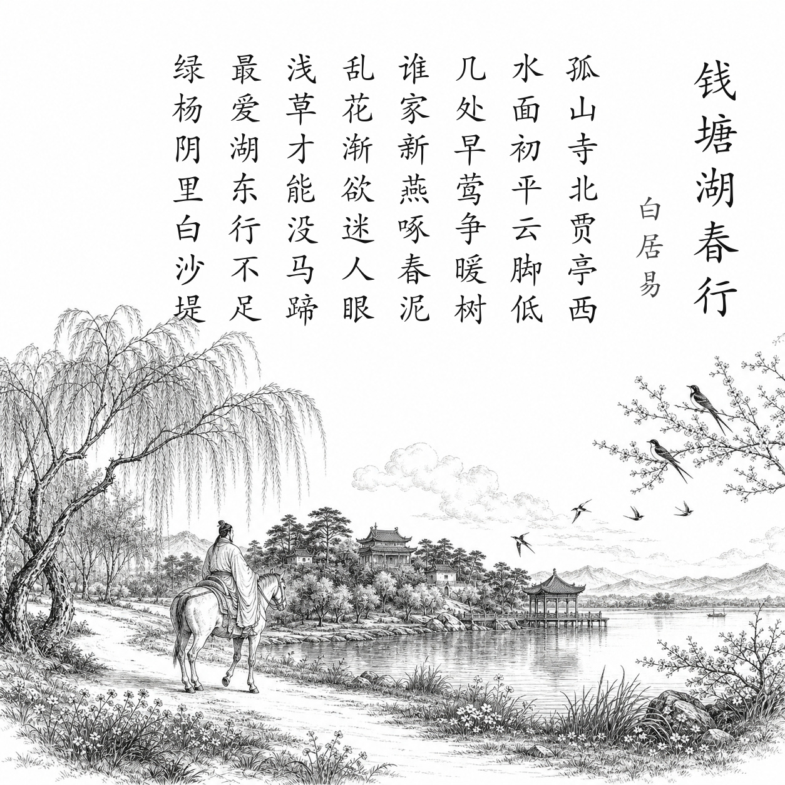

唐 · 白居易
钱塘湖春行
孤山寺北贾亭西，水面初平云脚低。
几处早莺争暖树，谁家新燕啄春泥。
乱花渐欲迷人眼，浅草才能没马蹄。
最爱湖东行不足，绿杨阴里白沙堤。
白话翻译
从孤山寺北走到贾公亭西，春水刚涨得与堤岸齐平，低云仿佛贴着湖面。
几处早来的黄莺争占向阳树枝，不知谁家新燕正衔泥筑巢。
初开的繁花渐渐让人眼花，浅浅春草刚能遮住马蹄。
最爱湖东景色，总也游不够，尤其是绿杨树荫里的白沙堤。
为什么写这篇古诗文
白居易任杭州刺史期间，常巡视和游赏西湖。823或824年春，他沿湖骑行，把“水初平、早莺、新燕、浅草”等细节依次写入诗中，既记录早春，也表达治理杭州期间对西湖的深厚感情。
关于作者
白居易（772—846），字乐天，号香山居士。其诗主张语言平易、关怀现实，代表作既有讽谕长篇，也有大量清新自然的山水与日常生活诗。